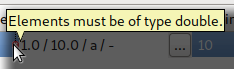
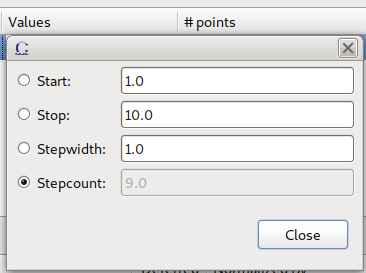
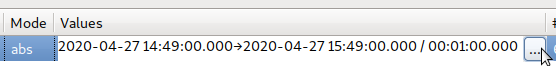

Several properties of an axis added to a scan module can be modified within the motor axes table of the SM Axes / Channels View. How is explained in detail below.
The stepfunction is editable by a combo box. Note that for axes of specific types (e.g. with a discrete domain) not all stepfunctions are available:
By clicking in the Main column an axis could be set as main axis. Previously set Main axis are reset automatically. To unset a main axis, click on the arrow in the Main column (1).
The total position count (2) and the stepwidth of other axes (3) are adjusted accordingly.
The position mode is editable by a combo box. Click the column to open it and select the postion mode of choice.
Editing of positions axes should be actuated to depends on various things, e.g. the selected stepfunction, the data type of the axis and its domain space. the following paragraphs elaborate different scenarios separated by stepfunction.
Stepfunctions add and multiply are given by a 4-tupel. For a detailed description also consider the descriptions in the Motor Axis View.
An Add/Multiply stepfunction is shown by start → stop / stepwidth:
By clicking inside the label the values can be modified. The syntax changed to start / stop / stepwidth / stepcount. Exactly one of the values must be set to a dash. It is calculated out of the other three:
If a main axis is set (which is not the axis being edited) only three values are shown (stepcount is defined by the main axis):
The input can be canceled with Espace or confirmed with Enter if it is a valid input. Otherwise a tooltip hints to the error:


A second option to edit the values is clicking the ... button which opens a dialog similar to the content shown in the Motor Axis View:

For date type motor axes labels and editing are adjusted accordingly. The start → stop / stepwidth systax is equal to int/double types but each value is a text input combination of date and time:
In contrast to int/double axes, date axes can only be modified via dialog by first clicking inside the label and then on the ... button:

The dialog shown is similiar to the content shown in the Motor Axis View:

The active text field shows a content assist icon (light bulp). Clicking on it opens a dialog containing a calendar for easier input:
For date type axes with position mode relative so called Durations are defined. Only non zero parts of the duration are shown:
Durations also are editable only via dialog (by clicking on the ... button):
Content assist is available:
For stepfunction file, the values column shows the filename (the full path is shown via tooltip):
By clicking inside the label the full path can be edited (confirm with Enter, cancel with Escape):
If the ... button is clicked a dialog is shown, allowing to select a file via file dialog and viewing statistics of the file contents:
For plugins the values column shows “Plugin” with its name in brackets:
The plugin’s parameters and their values are shown via tooltip:
To adjust the plugin or its parameter values click inside the label and on the ... button:
A dialog appears showing a combo box to change the plugin and an editable table for its parameters:
For positionlists the values column shows a comma separated list of values. Depending on the data type of the motor axis the values could be numeric, strings, etc.:
To edit the values click inside the label:
If the list is too long a dialog with a multi line text field can be opened by clicking on the ... button:
For stepfunction range the values column shows a comma separated list of range definitions. A tooltip shows the resulting positionlist as well as the number of positions:
To edit the range click inside the label. The tooltip is updated during typing:
If the current input is invalid the tooltip shows the valid syntax: